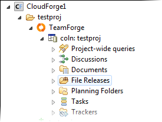
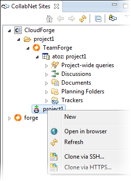

A CloudForge project is a container where
you can add services such as TeamForge, Subversion
and Git, and project members who can access these services.
-
In the CollabNet Sites view, right-click a CloudForge site and select Add
CloudForge project.
Or click New Project in the
Dashboard's CloudForge
tab.
The Add CloudForge project dialog appears.
-
Enter the Project name.
This is the project's title and is displayed in the CollabNet
Sites view.
- Optional:
The Short name gets populated with whatever you enter
for Project name.
You can edit it, but it must be unique within the account. This is a shortcut
and is used within access URLs.
- The Short name must start with a letter.
- It cannot contain spaces or special characters.
-
Select services for your project.
Your choices are TeamForge and Git.
Adding services at this stage is optional. You can add them at any point
after your project is created.
- When you select Git, a Git repository is added
to the project; access URLs take the form
domainname.git.cloudforge.com/projectname.
- When you
select TeamForge, its various ALM
and Agile tools become available in the project.
-
Click Finish.
When you've added a
CloudForge project
with
TeamForge, you can expand the
TeamForge node to see the child nodes you would
have in a regular
TeamForge project. (The
Source Code node is not displayed.)

- To add (more) services to a CloudForge
project, right-click the project node, select Add CloudForge Service and
select the ones you want.
- The Create TeamForge
site option is enabled for a TeamForge service node if a corresponding
TeamForge site has not already
been created. You can use this option to create a new (top-level) TeamForge site.
- You have options for cloning a Git service node via SSH or HTTPS.
These options invoke the Clone Git Repository wizard where you can provide your
password and the repository location to clone.

- For the access URL and other details, right-click the item in the
CollabNet Sites view and select .
- To add users to your project, double-click the project and use the web interface.